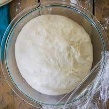

Pizza Dough

Description
Overnight pizza dough
Ingredients
- 2 teaspoons/5 grams dry active yeast
- 4 ½ cups/625 grams all-purpose flour, plus extra for dusting
- 2 teaspoons/5 grams kosher salt
- 2 tablespoons/30 milliliters olive oil
Steps
-
Put 1 3/4 cups/420 milliliters lukewarm water in a mixing bowl (use a
stand mixer or food processor if you prefer). Sprinkle yeast over water and
let dissolve, about 2 minutes.
-
Add flour, salt and olive oil and mix well until flour is incorporated and
dough forms, about 5 minutes. It may look a little rough or pockmarked.
-
Lightly dust a work surface with flour. Turn dough out onto surface and knead
lightly until it looks smooth, 3 to 4 minutes. Cut dough into 4 equal pieces,
about 8 ounces/225 grams each.
-
Wrap dough pieces individually in resealable zipper bags and refrigerate for
several hours or, for best results, overnight; you can also freeze it for future use.
(You can skip this rise in the refrigerator and use the dough right away, but this cool,
slow rise makes it easier to stretch and gives the pizza a crisper texture and more nuanced flavor.)
-
To use dough, form each piece into a smooth, firm ball, and place on a flour-dusted
or parchment-lined baking sheet. (If you froze the dough, leave it at room temperature
for several hours first, or defrost overnight in the refrigerator.) Flour lightly,
cover loosely with plastic wrap and top with a kitchen towel. Leave to rise in a warm
spot until doubled in size, about 30 minutes. Each dough ball with make a 10-inch diameter pizza.